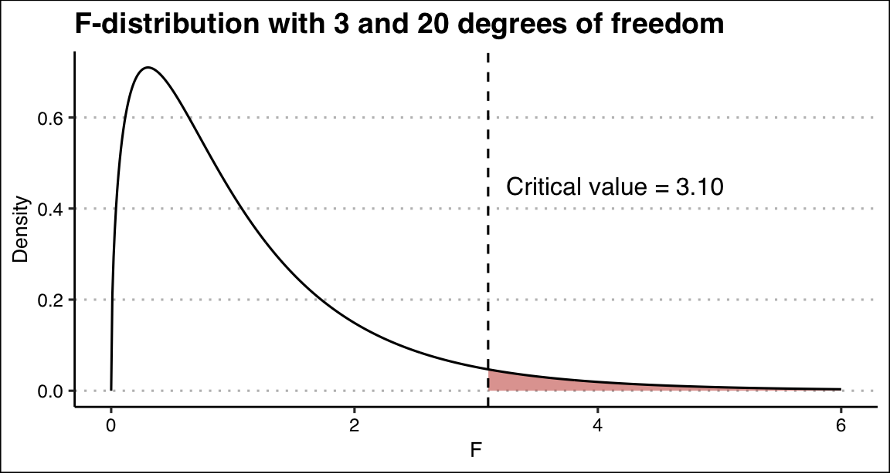

01 · Is r Real?
Correlation Test
t = r√(n − 2) / √(1 − r²)
Tests whether the population correlation ρ differs from zero, with df = n − 2.
Exampler = 0.5, n = 30 → t = 3.06, p ≈ 0.005
In Regression I and II we described how variables move together. We measured the strength of a relationship with the correlation coefficient, and we summarized it with a regression line. In Inference I through III we learned that any statistic calculated from a sample carries sampling error, and that a hypothesis test helps us decide whether a pattern in a sample is strong enough to tell us something about the population. This final chapter brings the two ideas together. We ask whether the relationships we find in a sample are real, or whether they could simply be the result of sampling error.
Specifically, we will test whether:
The first three tests follow the logic you already know from Inference III. We compare what we observe in the sample with what we would expect if there were no relationship, and we measure that distance in standard errors:
THE GENERAL TEST STATISTIC \[t=\frac{\text{estimate}-\text{hypothesized value}}{\text{standard error of the estimate}}\]
The estimate changes from section to section (a correlation, a difference of means, a regression slope), and so does its standard error. The idea stays the same. A test statistic close to zero means the sample is consistent with the null hypothesis. A test statistic far from zero means the sample would be unusual if the null were true. Keep this formula in mind as you read the chapter. The last test, the \(F\)-test, works with a ratio instead, and we explain it at the end of the chapter.
Recall from Regression I that the correlation coefficient \(r_{xy}\) measures the strength and direction of the linear relationship between two variables. The correlation we calculate comes from a sample, so it carries sampling error just like the sample mean. If we drew a different sample, we would get a slightly different \(r_{xy}\). This means that a sample correlation is almost never exactly zero, even when the two variables are unrelated in the population. A correlation of \(0.2\) might reflect a real relationship, or it might be the result of chance.
To decide, we test the population correlation \(\rho\) (the Greek letter “rho”). The null hypothesis states that there is no relationship (or a relationship in the direction we are not interested in). The hypotheses take one of three forms:
Use a one-tailed test when you have a reason to expect a particular direction (for example, that price and quantity demanded are negatively related), and a two-tailed test when you only want to know whether a relationship exists.
CORRELATION TEST STATISTIC \[t = \frac{r_{xy}\sqrt{n-2}}{\sqrt{1-r_{xy}^2}}\] with degrees of freedom \(df = n - 2\), where \(r_{xy}\) is the sample correlation coefficient and \(n\) is the sample size.
The formula is easier to read than it looks. The numerator grows with \(r_{xy}\), so stronger correlations produce larger test statistics. It also grows with the sample size, so the same correlation is more convincing when it comes from \(300\) observations than when it comes from \(10\). The denominator, \(\sqrt{1-r_{xy}^2}\), shrinks as the correlation gets closer to \(1\) or \(-1\), which makes the test statistic even larger for very strong correlations. We lose two degrees of freedom because the correlation is closely tied to a regression line, which requires estimating two values from the data (an intercept and a slope). We will return to this connection later in the chapter.
Example: A sample of \(n = 30\) shows a correlation of \(r = 0.5\) between advertising and sales. Testing \(H_0: \rho = 0\) against \(H_a: \rho \ne 0\): \[t = \frac{0.5\sqrt{30-2}}{\sqrt{1-0.5^2}} = \frac{0.5 \times 5.29}{0.866} = 3.06\] With \(df = 28\), the two-tailed p-value is about \(0.005\). Because \(0.005 < 0.05\), we reject the null and conclude the correlation is statistically significant. If advertising and sales were unrelated, a sample of \(30\) would produce a correlation this far from zero only about \(5\) times in \(1{,}000\).
Note that statistically significant does not mean strong or important. With a very large sample, even a correlation of \(0.05\) can be statistically significant. The test only tells us that the correlation is unlikely to be exactly zero. Always look at the size of \(r_{xy}\) as well as the p-value.
Many business questions compare two groups. Does a new store layout raise average sales? Do customers in two regions spend different amounts? Do employees who took a training program perform better than those who did not? In each case there are two populations with means \(\mu_1\) and \(\mu_2\), and we want to know whether the difference \(\mu_1-\mu_2\) is different from zero (or from some other value \(d_0\)).
We estimate the population difference with the sample difference \(\bar{x}_1-\bar{x}_2\). Once again, this difference carries sampling error. Even if the two populations had exactly the same mean, two samples would almost never produce the same sample mean. The question is whether the gap we observe is larger than what sampling error alone would produce. The hypotheses take the familiar three forms:
In most applications \(d_0=0\), so the null hypothesis states that the two means are equal (or that the difference points in the direction we are not interested in).
Before choosing a test, ask how the two samples were collected. If each observation in one sample is matched to one observation in the other (the same people measured twice, or the same stores before and after a promotion), the samples are paired. If the two samples come from separate groups with no link between them, the samples are unpaired (or independent). We begin with the unpaired case.
Following the general test statistic, we divide the observed gap by its standard error. So what is the standard error of a difference of two means? From Inference I we know that the variance of a single sample mean is \(\sigma^2/n\). Each sample mean wobbles around its own population mean, independently of the other. When we take the difference, these wobbles do not cancel out. They add up. For independent samples, the variance of the difference is the sum of the two variances:
\[Var(\bar{x}_1-\bar{x}_2)=\frac{\sigma_1^2}{n_1}+\frac{\sigma_2^2}{n_2}\]
It may seem strange that we add variances when we subtract means. Think of two noisy measurements. Each one can be off by a little in either direction, so the gap between them can be off because of the first measurement, the second one, or both. Two sources of uncertainty make the difference less certain than either mean on its own.
In practice we do not know \(\sigma_1\) and \(\sigma_2\), so we replace them with the sample standard deviations \(s_1\) and \(s_2\). This leads to two versions of the test, depending on whether we believe the two populations have the same variance.
Unequal variances (Welch’s test). If we have no reason to believe the population variances are equal, each sample keeps its own variance:
UNPAIRED TEST, UNEQUAL VARIANCES (WELCH) \[t = \frac{(\bar{x}_1 - \bar{x}_2) - d_0}{\sqrt{\frac{s_1^2}{n_1} + \frac{s_2^2}{n_2}}} \qquad df=\frac{(a+b)^2}{\frac{a^2}{n_1-1}+\frac{b^2}{n_2-1}}\] where \(a=s_1^2/n_1\) and \(b=s_2^2/n_2\) are the two pieces of the variance of the difference. Round the degrees of freedom down to a whole number.
The degrees of freedom formula, due to the statistician Bernard Welch, looks intimidating, but its job is simple. Because we use \(s_1\) and \(s_2\) in place of \(\sigma_1\) and \(\sigma_2\), the test statistic does not follow a \(t\)-distribution exactly. Welch’s formula finds the \(t\)-distribution that best approximates it. The result always falls between the smaller of \(n_1-1\) and \(n_2-1\) and the total \(n_1+n_2-2\):
Since the result is usually not a whole number, we round it down. This is the cautious choice: fewer degrees of freedom mean fatter tails and a slightly larger p-value.
Equal variances (pooled test). If we believe the two populations are equally spread out, there is a single variance to estimate, and we can combine both samples to estimate it. The pooled variance is a weighted average of the two sample variances, where each sample is weighted by its degrees of freedom:
UNPAIRED TEST, EQUAL VARIANCES (POOLED) \[s_p^2=\frac{(n_1-1)s_1^2+(n_2-1)s_2^2}{n_1+n_2-2} \qquad t = \frac{(\bar{x}_1 - \bar{x}_2) - d_0}{\sqrt{s_p^2\left(\frac{1}{n_1} + \frac{1}{n_2}\right)}}\] with degrees of freedom \(df = n_1 + n_2 - 2\).
Pooling uses all \(n_1+n_2\) observations to estimate one variance, which gives a more precise estimate and more degrees of freedom. The cost is that if the variances are in fact different, the pooled test can be misleading.
Which one should you use? Use the pooled test when there is a good reason to believe the two populations are equally spread out (for example, when both groups are drawn from the same pool) and the sample standard deviations are similar. A common rule of thumb is that the larger sample standard deviation should be no more than twice the smaller one. When in doubt, use Welch’s test. It works well whether or not the variances are equal, which makes it the safer choice.
Example (unpaired). A company evaluates a training program by recording a productivity score for six employees who took the program and six different employees who did not:
| Took the program | Did not take the program |
|---|---|
| 23 | 20 |
| 36 | 32 |
| 27 | 25 |
| 43 | 40 |
| 31 | 28 |
| 39 | 35 |
Step 1: State the hypotheses. We want to know whether the two group means differ, so we test \(H_0: \mu_1 - \mu_2 = 0\) against \(H_a: \mu_1 - \mu_2 \ne 0\). We have no strong reason to assume equal variances, so we use Welch’s test.
Step 2: Summarize each sample. The group that took the program has \(\bar{x}_1 = 33.17\) and \(s_1^2 = 56.97\). The group that did not has \(\bar{x}_2 = 30.00\) and \(s_2^2 = 51.60\).
Step 3: Calculate the standard error and the test statistic. The two pieces of the variance are \(a = 56.97/6 = 9.49\) and \(b = 51.60/6 = 8.60\), so: \[t = \frac{(33.17 - 30.00) - 0}{\sqrt{9.49 + 8.60}} = \frac{3.17}{4.25} = 0.74\]
Step 4: Calculate the degrees of freedom. \[df=\frac{(9.49+8.60)^2}{\frac{9.49^2}{5}+\frac{8.60^2}{5}}=\frac{327.4}{18.03+14.79}=9.98\] which we round down to \(9\). Since both samples contribute about equally, the result is close to the maximum of \(n_1+n_2-2=10\).
Step 5: Find the p-value and decide. With \(t = 0.74\) and \(df = 9\), the two-tailed p-value is roughly \(0.48\). Because \(0.48 > 0.05\), we fail to reject the null. The gap of \(3.17\) points is small compared with the large variation between employees (scores range from \(20\) to \(43\)), so we cannot conclude that the program helped.
Since both groups have six employees and similar standard deviations, the pooled test is also reasonable here. The pooled variance is \(s_p^2 = \frac{5(56.97) + 5(51.60)}{10} = 54.28\), which gives a standard error of \(\sqrt{54.28\left(\frac{1}{6}+\frac{1}{6}\right)} = 4.25\), the same \(t = 0.74\), and \(df = 10\). The p-value is about \(0.47\), so the conclusion does not change. When the two samples have the same size, the two versions always produce the same test statistic and differ only in their degrees of freedom.
When the samples are paired, we can take a shortcut. For each pair, we calculate the difference \(d_i\) (for example, the “after” score minus the “before” score). Once we have the differences, the two samples become a single sample of differences, and we can apply the one-sample \(t\)-test from Inference III to them. The null hypothesis states that the population mean difference \(\mu_d\) equals \(d_0\) (usually zero, meaning no change).
PAIRED TEST \[t=\frac{\bar{d} - d_0}{s_d / \sqrt{n}}\] where \(\bar{d}\) and \(s_d\) are the mean and standard deviation of the differences, and \(n\) is the number of pairs. The degrees of freedom are \(df = n - 1\).
Example (paired). Now suppose the company measured the same six employees before and after the program, so every “after” score is matched to that person’s own “before” score:
| Employee | Before | After | Difference |
|---|---|---|---|
| 1 | 20 | 23 | 3 |
| 2 | 32 | 36 | 4 |
| 3 | 25 | 27 | 2 |
| 4 | 40 | 43 | 3 |
| 5 | 28 | 31 | 3 |
| 6 | 35 | 39 | 4 |
These are the same numbers as in the unpaired example, so the group means are identical (\(30.00\) before, \(33.17\) after). The difference is that we now work with each person’s change. The individual gains are remarkably consistent: \(\bar{d} = 3.17\) with \(s_d = 0.75\). Testing \(H_0: \mu_d = 0\) against \(H_a: \mu_d \ne 0\): \[t = \frac{\bar{d} - 0}{s_d / \sqrt{n}} = \frac{3.17}{0.75 / \sqrt{6}} = 10.30\] With \(df = 6 - 1 = 5\) (six pairs, not twelve observations), the two-tailed p-value is about \(0.0001\). Because \(0.0001 < 0.05\), we reject the null: the program raised productivity.
The two examples use the same numbers yet reach opposite conclusions, and the reason is the design. The unpaired test must carry the large variation between employees, and that noise hides the modest improvement. Some employees simply score higher than others, with or without training. The paired test removes this person-to-person variation by comparing each employee with themselves. What is left is a small, consistent gain that stands out sharply (the standard deviation drops from about \(7.5\) to \(0.75\)). Whenever the data are naturally matched, pairing is the more powerful choice. Keep in mind, however, that you cannot choose the test after seeing the results. The test must match how the data were collected.
In Regression II we estimated regression lines and measured how well they fit. Those lines were calculated from a sample. If we collected a different sample, we would get a different intercept and different slopes. In other words, regression coefficients carry sampling error, just like the sample mean and the correlation. In this section we write the estimated coefficients as \(b_j\) (the \(\hat{\beta}_j\) of Regression II) and use \(\beta_j\) for the unknown population coefficients that we are trying to learn about.
Consider the simple regression model in the population, \(y = \beta_0 + \beta_1 x + \varepsilon\). Ask yourself what would happen if \(\beta_1 = 0\). The model would become \(y = \beta_0 + \varepsilon\). The line would be flat. Changing \(x\) would not change \(y\) at all, and knowing \(x\) would not help us predict \(y\). Our best prediction would be the same for every value of \(x\). In other words, a slope of zero means that \(x\) has no linear relationship with \(y\).
That is why zero is the natural null hypothesis. \(H_0: \beta_1 = 0\) states that “this variable has no effect on \(y\)”, and \(H_a: \beta_1 \ne 0\) states that it does. Even when the true slope is zero, the slope we estimate from a sample will not be exactly zero, because of sampling error. The test asks whether our estimate \(b_1\) is far enough from zero, measured in standard errors, that sampling error alone is an unlikely explanation.
The conclusion of the test has practical consequences:
In a multiple regression, the test for \(\beta_j\) asks a more specific question: does \(x_j\) help explain \(y\) after the other variables in the model have done their part? We will see why this distinction matters in the next section.
TEST FOR A SINGLE COEFFICIENT \[H_0: \beta_j = 0 \quad\text{vs.}\quad H_a: \beta_j \ne 0, \qquad t = \frac{b_j - 0}{se(b_j)}\] where \(b_j\) is the estimated coefficient and \(se(b_j)\) is its standard error, with \(df = n - k - 1\).
The standard error of a coefficient measures how much the estimate would vary from sample to sample. For a simple regression it has a short formula that shows what drives it:
\[se(b_1)=\frac{s_e}{\sqrt{\sum (x_i-\bar{x})^2}}\]
Three things make the slope more precise (a smaller standard error):
In multiple regression the formula is more involved, so we let Excel calculate the standard errors for us.
Example: In Regression II we regressed Weight on minutes of Exercise for five people and obtained \(\hat{y} = 171.00 - 0.153x\). Is the slope significantly different from zero? We test \(H_0: \beta_1 = 0\) against \(H_a: \beta_1 \ne 0\) at the \(5\%\) level.
The residual standard error is \(s_e = 1.59\). The mean of Exercise is \(\bar{x}=30\), and the squared deviations are \(15^2 + (-20)^2 + (-5)^2 + 0^2 + 10^2 = 750\). Hence: \[se(b_1) = \frac{1.59}{\sqrt{750}} = 0.058 \qquad t = \frac{-0.153 - 0}{0.058} = -2.64\]
With \(df = 5 - 1 - 1 = 3\), the two-tailed p-value is about \(0.077\). Because \(0.077 > 0.05\), we fail to reject the null at the \(5\%\) level (although we would reject it at the \(10\%\) level). The sample shows a clear negative pattern, but with only five people, a slope this steep would appear in about \(7.7\%\) of samples even if exercise had no effect on weight. A larger sample would give a more definitive answer.
This test is closely connected to the correlation test. The correlation between Weight and Exercise is \(r=-0.8365\), and the correlation test statistic is \(t=\frac{-0.8365\sqrt{3}}{\sqrt{1-0.8365^2}}=-2.64\), the same value. In a simple regression, testing whether the slope is zero and testing whether the correlation is zero are the same test. This is also why the correlation test uses \(n-2\) degrees of freedom.
In Regression II we built the \(F\)-statistic, \(F = MSR/MSE\), which compares the variation the model explains per variable with the variation it leaves unexplained per observation. We argued that a model of useless variables would produce an \(F\) close to \(1\), and that a large \(F\) signals a real pattern. Now we can make “large” precise.
The \(F\)-test asks a single question about the whole model: do the variables, taken together, help explain \(y\)?
Note that the alternative does not say that all the coefficients are different from zero. Rejecting the null tells us that the model as a whole has explanatory power, not which variables are responsible.
JOINT SIGNIFICANCE (F-TEST) \[H_0: \beta_1 = \beta_2 = \dots = \beta_k = 0, \qquad F = \frac{SSR/k}{SSE/(n-k-1)} = \frac{MSR}{MSE}\] where \(k\) is the number of independent variables and \(n\) is the sample size. If \(H_0\) is true, \(F\) follows an \(F\)-distribution with \(k\) and \(n-k-1\) degrees of freedom.
The F-distribution describes the values of \(F\) we would see across many samples if the null were true. Because \(F\) is a ratio of two averages of squared numbers, it can never be negative. The distribution is skewed to the right, and when the null is true most of its values fall near \(1\). Only large values of \(F\) are evidence against the null, so the \(F\)-test is always right-tailed: the p-value is the area to the right of the observed \(F\). The figure below shows an \(F\)-distribution with \(3\) and \(20\) degrees of freedom. The shaded area is the \(5\%\) rejection region, which starts at \(3.10\).

You may wonder why we need the \(F\)-test when we can already test each coefficient with a \(t\)-test. There are two reasons:
Example: In Regression II we added Calories to the Weight and Exercise model and obtained \(\hat{y} = 83.96 - 0.025x + 0.069z\) with \(SSR = 24.19\) and \(SSE = 1.01\). With \(k = 2\) and \(n = 5\), the ANOVA table is:
| Source | df | SS | MS | F | Significance F |
|---|---|---|---|---|---|
| Regression | 2 | 24.19 | 12.09 | 23.89 | 0.040 |
| Residual | 2 | 1.01 | 0.506 | ||
| Total | 4 | 25.20 |
The p-value of the \(F\)-test (Excel calls it Significance F) is \(0.040\). Because \(0.040 < 0.05\), we reject the null: Exercise and Calories, taken together, help explain Weight.
Now look at the individual coefficient tests:
| Variable | Coefficient | Standard Error | t Stat | p-value |
|---|---|---|---|---|
| Intercept | 83.96 | 24.20 | 3.47 | 0.074 |
| Exercise | -0.025 | 0.044 | -0.57 | 0.628 |
| Calories | 0.069 | 0.019 | 3.60 | 0.069 |
Neither slope is significant at the \(5\%\) level, even though the model as a whole is. How can this be? In this data, Exercise and Calories are strongly related (their correlation is \(-0.81\)): the people who exercise more also eat fewer calories. Together the two variables explain \(96\%\) of the variation in Weight. But because they move together, the regression has a hard time telling how much of the effect belongs to each one. Each \(t\)-test asks whether a variable adds anything once the other is already in the model, and with this much overlap neither adds much on its own. The \(F\)-test looks at their combined contribution and detects it.
When the model has a single independent variable, the \(F\)-test and the \(t\)-test for the slope ask the same question, and they always agree. In fact, \(F = t^2\). For the Weight and Exercise model, \(F = 6.99 = (-2.64)^2\), and both tests give the same p-value of \(0.077\).
The ANOVA table organizes all the pieces of the \(F\)-test:
| Source | df | SS | MS | F |
|---|---|---|---|---|
| Regression | \(k\) | \(SSR\) | \(MSR = \frac{SSR}{k}\) | \(F = \frac{MSR}{MSE}\) |
| Residual | \(n-k-1\) | \(SSE\) | \(MSE = \frac{SSE}{n-k-1}\) | |
| Total | \(n-1\) | \(SST\) |
Correlation significance. Compute the correlation with =CORREL(x_range, y_range), then turn it into a test statistic and p-value:
=(r*SQRT(n-2)) / SQRT(1 - r^2)followed by =T.DIST.2T(ABS(t), n-2) for a two-tailed test (or =T.DIST / =T.DIST.RT for one tail).
Difference of means. The =T.TEST(array1, array2, tails, type) function returns the p-value directly. The tails argument is 1 (one-tailed) or 2 (two-tailed); the type argument is 1 (paired), 2 (two-sample, equal variances), or 3 (two-sample, unequal variances). For the training examples, with the “took the program” scores in A2:A7 and the other scores in B2:B7:
=T.TEST(A2:A7, B2:B7, 2, 3) /* Unpaired, unequal variances */
=T.TEST(A2:A7, B2:B7, 2, 1) /* Paired */The first formula returns a p-value of about \(0.47\) to \(0.48\) and the second about \(0.0001\), matching our hand calculations. For full output (the test statistic, degrees of freedom, critical values, and both one- and two-tailed p-values), use the Data Analysis ToolPak, which offers t-Test: Paired Two Sample for Means, t-Test: Two-Sample Assuming Equal Variances, and t-Test: Two-Sample Assuming Unequal Variances.
Regression inference. Run Data → Data Analysis → Regression. The output reports each coefficient with its standard error, \(t\)-statistic, and p-value (the individual coefficient tests), the \(F\)-statistic with its Significance F (the joint test), and the ANOVA table. Everything in this section is produced in a single step. If you already have an \(F\)-statistic, you can find its p-value and critical value directly:
=F.DIST.RT(23.89, 2, 2) /* p-value: 0.040 */
=F.INV.RT(0.05, 2, 2) /* critical value: 19.00 */Below is a list of the Excel functions and tools used in this section:
=CORREL(x_range, y_range) returns the correlation coefficient, the starting point for a correlation test.
=T.TEST(array1, array2, tails, type) returns the p-value of a difference-of-means test. type is 1 (paired), 2 (equal variances), or 3 (unequal variances).
=T.DIST.2T(x, deg_freedom), =T.DIST(x, df, TRUE), and =T.DIST.RT(x, df) convert a test statistic to a p-value.
=F.DIST.RT(F, k, n-k-1) returns the p-value of the \(F\)-test, and =F.INV.RT(alpha, k, n-k-1) returns its critical value.
Data Analysis ToolPak → t-Test performs the three difference-of-means tests with full output.
Data Analysis ToolPak → Regression returns coefficients, standard errors, \(t\)-statistics, p-values, the \(F\)-statistic, \(R^2\), and the ANOVA table.
Tests whether the population correlation ρ differs from zero, with df = n − 2.
Compares two population means. SE depends on the design: unequal variances, equal (pooled) variances, or paired.
Use when each observation is matched, such as before and after. df = number of pairs − 1. Removes person-to-person noise.
Tests H₀: βj = 0, whether one predictor matters holding the others fixed. df = n − k − 1.
Tests whether all slopes are zero at once. A small Significance F rejects that null.
Regression has k df, residual n − k − 1, and total n − 1. SST = SSR + SSE.
Test the main ideas of the chapter before moving on to the exercises. Pick an answer to see whether you are right and why.
A sample of \(n=50\) gives a correlation of \(r=0.3\). What is the test statistic for \(H_0: \rho = 0\), and its degrees of freedom?
\(t=\frac{0.3\sqrt{48}}{\sqrt{1-0.09}}=\frac{2.078}{0.954}\approx2.18\), with \(df=n-2=48\).
In which situation should you use a paired test?
A paired test applies when each observation in one sample is matched to one in the other, such as the same store measured twice.
In the chapter, the same training data gave \(p \approx 0.48\) with an unpaired test and \(p \approx 0.0001\) with a paired test. Why?
The paired test works with each employee’s change, so the variation between employees (scores from \(20\) to \(40\)) drops out. The standard deviation falls from about \(7.5\) to \(0.75\).
A paired test compares the before and after sales of \(12\) salespeople. How many degrees of freedom does it have?
For a paired test \(df=n-1\), where \(n\) is the number of pairs: \(12-1=11\). There are \(24\) measurements, but only \(12\) differences.
A regression coefficient is \(b_j=4.2\) with a standard error of \(1.4\). What is its \(t\) statistic?
\(t=b_j/se(b_j)=4.2/1.4=3\). A value this far from zero suggests the predictor matters.
What is the null hypothesis of the joint \(F\)-test in a regression?
\(H_0: \beta_1 = \beta_2 = \dots = \beta_k = 0\), meaning no predictor helps. A small Significance F rejects it.
Which type argument of =T.TEST() compares two independent groups with unequal variances?
type is \(1\) for paired, \(2\) for two samples with equal variances, and \(3\) for two samples with unequal variances.
A regression with \(k=3\) predictors is fit to \(n=40\) observations. How many residual degrees of freedom does it have?
Residual \(df=n-k-1=40-3-1=36\). The total is \(n-1=39\), and the regression row has \(k=3\).
The following exercises will help you test your knowledge of regression and inference. In particular, the exercises work on:
Try not to peek at the answers until you have formulated your own answer and double checked your work for any mistakes.
Consider the competing hypotheses \(H_{0}: \rho = 0\), \(H_{a}: \rho \neq 0\). A sample of \(25\) observations reveals a correlation coefficient of \(0.15\) between two variables. At a \(5\%\) significance level, can we reject the null hypothesis?
Answer
We cannot reject the null: the p-value of \(0.47\) is greater than \(0.05\).
In Excel:
=(0.15*SQRT(25-2)) / SQRT(1 - 0.15^2) → \(0.73\) (test statistic)=T.DIST.2T(0.73, 23) → \(0.47\) (two-tailed p-value)Use the Hitters data set to examine the relationship between Hits and Salary. Calculate the correlation coefficient and test \(H_{0}: \rho = 0\) against \(H_{a}: \rho \neq 0\) at the \(1\%\) significance level.
Answer
The correlation is \(0.44\) and the test statistic is \(7.89\). The p-value is approximately \(0\), so we reject the null hypothesis: the correlation between Hits and Salary is highly significant.
In Excel (there are \(263\) players with a recorded salary):
=CORREL(Hits_range, Salary_range) → \(0.44\)=(0.44*SQRT(263-2)) / SQRT(1 - 0.44^2) → \(7.89\) (test statistic)=T.DIST.2T(7.89, 261) → approximately \(0\)Use the Hitters data set to investigate whether the average number of Hits differs between the two leagues (American and National), using the NewLeague and Hits variables. Test at the \(5\%\) significance level. Is there reason to believe the population variances differ?
Answer
There is no strong reason to believe the variances differ, since players are recruited from a common pool. At the \(5\%\) level the difference in mean Hits is not significant, so we cannot reject the null.
Copy the Hits for NewLeague = "A" into one column and the Hits for NewLeague = "N" into another (or filter the data). This is an unpaired, two-tailed test assuming equal variances:
=T.TEST(A_range, N_range, 2, 2) → \(0.28\) (p-value)Since \(0.28 > 0.05\), we fail to reject the null.
Use the BrainCancer data set to test whether males have a higher average survival time than females, using the sex and time variables. Test at the \(5\%\) significance level. Is there reason to believe the population variances differ?
Answer
There may be reason to believe the variances differ, so we use an unequal-variance test. At the \(5\%\) level we cannot reject \(H_{0}: \mu_{male} - \mu_{female} \leq 0\): there is no evidence that males survive longer.
Run Data → Data Analysis → t-Test: Two-Sample Assuming Unequal Variances on the male and female survival times. The male mean (\(26.78\)) is actually below the female mean (\(28.10\)), giving a test statistic of \(-0.31\). Because the difference points opposite to the alternative, the one-tailed p-value is about \(0.62\), far above \(0.05\), so we fail to reject the null.
Use the sleep data set. At the \(1\%\) significance level, is there an effect of the drug on the \(10\) patients? Treat group \(1\) as the measurement before the drug and group \(2\) as after, so the two groups are the same patients measured twice.
The drug has an effect: we reject \(H_{0}: \bar{d} = 0\). The mean difference in extra sleep is statistically different from zero.
Because the same patients are measured twice, use a paired, two-tailed test. With the Group 1 values in A2:A11 and the Group 2 values in A12:A21:
=T.TEST(A2:A11, A12:A21, 2, 1) → \(0.0028\) (p-value)Since \(0.0028 < 0.01\), we reject the null at the \(1\%\) level.
Use the Hitters data set to investigate the effect of HmRun, RBI, and Years on a player’s Salary. Which variables are statistically different from zero? Are the variables jointly significant? Does the \(R^2\) suggest a good fit?
Answer
RBI and Years are statistically significant (p-values near \(0\)): salary rises with experience and with RBIs. Home runs are not significant (p-value about \(0.14\)). The \(F\)-statistic is highly significant, so the predictors are jointly significant. However, the \(R^2\) and adjusted \(R^2\) are only about \(0.32\), so the model explains just \(32\%\) of the variation in salary, so more variables would be needed for a better fit.
Copy HmRun, RBI, and Years into three adjacent columns (the ToolPak needs a contiguous X range), then run Data → Data Analysis → Regression with Salary as the Input Y Range and those three columns as the Input X Range. The output gives:
José Altuve had \(28\) home runs, \(57\) RBIs, and \(12\) years in the league. What salary does the model predict for him, and what is the \(95\%\) prediction interval? (The model predicts a 1987 salary.)
Answer
The predicted salary is \(619.93\) (thousand dollars), with a \(95\%\) prediction interval of \([-129.89,\ 1369.7]\).
Using the coefficients from the regression output (\(\hat{\alpha}=-90.09\), \(b_{HmRun}=-7.35\), \(b_{RBI}=9.16\), \(b_{Years}=32.82\)), the point prediction is:
=-90.09 + (-7.35)*28 + 9.16*57 + 32.82*12 → \(619.93\)The prediction interval widens the estimate by \(t \times s_e\), where \(t =\) T.INV.2T(0.05, 259) \(\approx 1.97\) and \(s_e\) is the regression’s standard error (\(\approx 381\) for a new observation). This gives \(619.93 \pm 749.8 = [-129.89,\ 1369.7]\). The interval is very wide, and even includes negative salaries, because the model explains only about a third of the variation in salary.